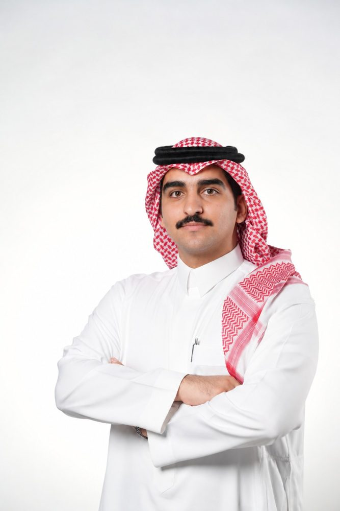
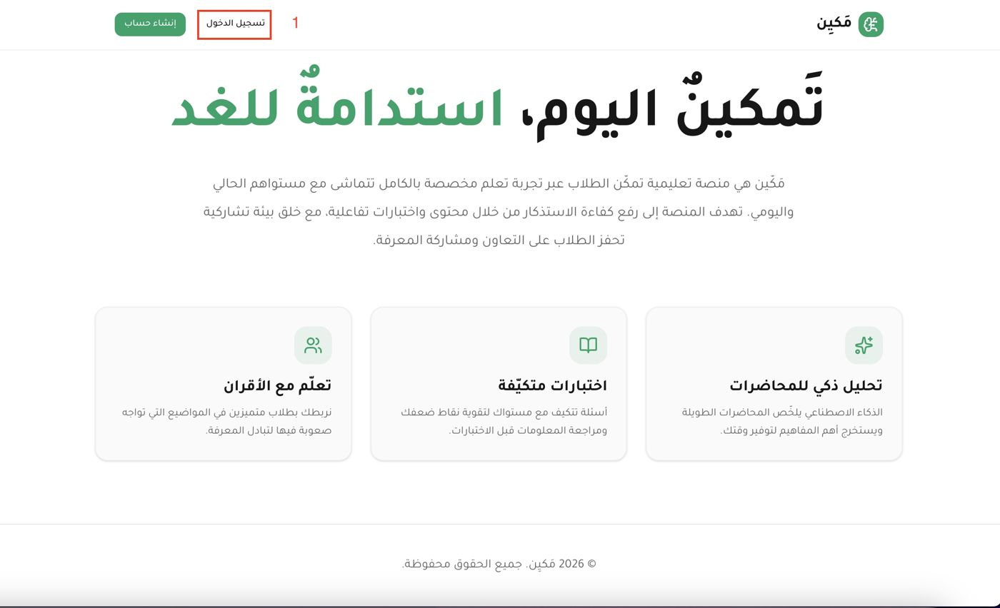
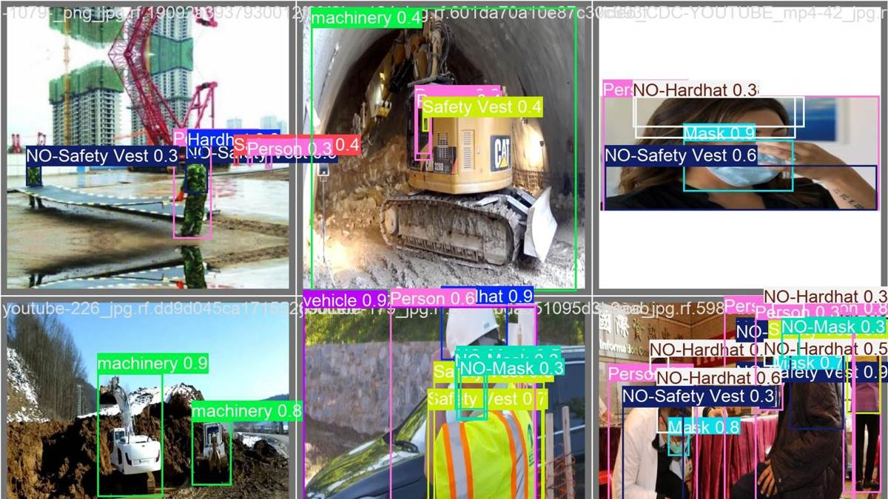

Computer Engineer · Riyadh, Saudi Arabiaمهندس حاسب آلي · الرياض، السعودية
Abdulmajeed Alshammariعبدالمجيد فهد الشمري
Data Engineering & AI, built on a strong foundation in Embedded Systems & IoTهندسة البيانات والذكاء الاصطناعي، على أساس متين في الأنظمة المدمجة وإنترنت الأشياء
I build data pipelines and analytics that turn raw sensor and production-line data into decisions people can act on. My path started at the hardware level, with microcontrollers, sensors and SMT production lines, so I understand data from the moment it is generated to the moment it drives a decision.أبني خطوط بيانات وتحليلات تحوّل بيانات الحساسات وخطوط الإنتاج الخام إلى قرارات قابلة للتنفيذ. بدأت رحلتي من مستوى العتاد، مع المتحكمات الدقيقة والحساسات وخطوط إنتاج SMT، لذلك أفهم البيانات من لحظة توليدها حتى لحظة اتخاذ القرار بها.
Currently: R&D Intern at Military Industries Corporation (MIC) · B.Sc. Computer Engineering, University of Hail (2026)حاليًا: متدرب بحث وتطوير في المؤسسة العامة للصناعات العسكرية (MIC) · بكالوريوس هندسة الحاسب، جامعة حائل (2026)

About meنبذة عني
From hardware to dataمن العتاد إلى البيانات
I'm a Computer Engineering graduate from the University of Hail (2026), based in Riyadh. I started on the hardware side of technology: embedded systems, IoT and electronics, building with Arduino, ESP32 and STM32, and working hands-on with sensors, communication protocols and real production lines.أنا خريج هندسة حاسب آلي من جامعة حائل (2026)، وأقيم في الرياض. بدأت من الجانب العتادي للتقنية: الأنظمة المدمجة وإنترنت الأشياء والإلكترونيات، أبني بـ Arduino وESP32 وSTM32، وأعمل عمليًا مع الحساسات وبروتوكولات الاتصال وخطوط إنتاج حقيقية.
Supervising SMT & THT production lines at IUTech changed my direction: the lines generated a constant stream of quality and process data, and collecting, cleaning and analyzing that data is where I created the most value, identifying bottlenecks in real time and reducing downtime. Since then, my focus has been data engineering and AI: building reliable pipelines and turning raw data into insight.الإشراف على خطوط إنتاج SMT وTHT في شركة أيوتك غيّر وجهتي: كانت الخطوط تولّد تدفقًا مستمرًا من بيانات الجودة والعمليات، وكان جمع تلك البيانات وتنظيفها وتحليلها هو المكان الذي صنعت فيه أكبر قيمة، باكتشاف الاختناقات لحظيًا وتقليل التوقفات. منذ ذلك الحين أصبح تركيزي على هندسة البيانات والذكاء الاصطناعي: بناء خطوط بيانات موثوقة وتحويل البيانات الخام إلى رؤى.
Along the way I completed the Data Science & AI Program at the Saudi Digital Academy, hands-on bootcamps at Tuwaiq Academy (Mechatronics, Microcontrollers & ESP32), Cisco's IoT program and the SAFCSP drones program, and my team won 1st place at the Sustainability in Education Hackathon at King Khalid University with Makeen AI. Beyond the technical side, I led the Programming & Games Club at university, a team of 30 members delivering 12 initiatives to 500+ students, and volunteered as a project supervisor at Fab Lab Hail. I value teamwork, clear communication and solving problems with people, not just code.خلال هذه الرحلة أكملت برنامج علم البيانات والذكاء الاصطناعي من الأكاديمية السعودية الرقمية، ومعسكرات عملية في أكاديمية طويق (الميكاترونكس، وأساسيات المتحكمات وESP32)، وبرنامج إنترنت الأشياء من Cisco، وبرنامج أساسيات الدرونز من SAFCSP، وفاز فريقي بالمركز الأول في هاكاثون الاستدامة في التعليم بجامعة الملك خالد بمشروع مَكين AI. وخارج الجانب التقني، قدت نادي البرمجة والألعاب في الجامعة بفريق من 30 عضوًا قدّمنا 12 مبادرة استفاد منها أكثر من 500 طالب، وتطوعت مشرف مشاريع في فاب لاب حائل. أؤمن بالعمل الجماعي والتواصل الواضح وحل المشكلات مع الناس، لا بالكود وحده.
Experienceالخبرات
Where I've workedمسيرتي العملية
Roles across R&D, production and research, all connected by hardware and data.أدوار بين البحث والتطوير والإنتاج والبحث العلمي، يجمعها خيط واحد: العتاد والبيانات.
Military Industries Corporation (MIC)المؤسسة العامة للصناعات العسكرية (MIC)
Jun 2026 – Presentيونيو 2026 – الآن
R&D Internمتدرب بحث وتطوير
Support embedded systems design and R&D activities in a confidential, mission-critical environment.أدعم تصميم الأنظمة المدمجة وأنشطة البحث والتطوير في بيئة سرّية وحساسة المهام.
Collaborate on hardware and software integration tasks across multidisciplinary teams.أتعاون في مهام تكامل العتاد مع البرمجيات ضمن فرق متعددة التخصصات.
IUTechشركة أيوتك (IUTech)
Sep 2025 – Jun 2026سبتمبر 2025 – يونيو 2026
Production Supervisor · Part-timeمشرف إنتاج · دوام جزئي
Planned and supervised SMT & THT production lines, coordinating workflow, mentoring operators and technicians, and enforcing quality and safety standards.خططت وأشرفت على خطوط إنتاج SMT وTHT، بتنسيق سير العمل وتوجيه المشغلين والفنيين وتطبيق معايير الجودة والسلامة.
Implemented digital manufacturing practices, integrating IoT-enabled systems for real-time monitoring of production metrics.طبّقت ممارسات التصنيع الرقمي بدمج أنظمة إنترنت الأشياء للمراقبة اللحظية لمؤشرات الإنتاج.
Built data pipelines and analyzed quality and soldering data to identify bottlenecks in real time, reduce downtime and improve overall efficiency.بنيت خطوط بيانات وحللت بيانات الجودة واللحام لاكتشاف الاختناقات لحظيًا وتقليل التوقفات ورفع الكفاءة.
Saudi Amateur Radio Society · Manarat Hail Space Centerالجمعية السعودية لهواة اللاسلكي · مركز منارة حائل للفضاء
Aug 2024 – Apr 2025أغسطس 2024 – أبريل 2025
IoT Student Traineeمتدرب إنترنت الأشياء
Contributed to transforming Manarat Hail into a smart facility by implementing IoT-based monitoring and automation solutions.أسهمت في تحويل منارة حائل إلى منشأة ذكية عبر تنفيذ حلول مراقبة وأتمتة قائمة على إنترنت الأشياء.
Built pipelines between embedded devices and processing layers to trigger automated responses from real-time sensor data.بنيت مسارات بين الأجهزة المدمجة وطبقات المعالجة لتفعيل استجابات آلية من بيانات الحساسات اللحظية.
Helped organize and deliver hands-on IoT workshops introducing the community to practical, real-world applications.شاركت في تنظيم وتقديم ورش عملية لتعريف المجتمع بإنترنت الأشياء وتطبيقاته الواقعية.
University of Hailجامعة حائل
Dec 2023 – Dec 2024ديسمبر 2023 – ديسمبر 2024
Student Employee · Part-timeموظف طالب · دوام جزئي
Prepared laboratory setups of electronic components, sensors and microcontrollers for lab exercises and student projects.جهزت إعدادات المختبرات من مكونات إلكترونية وحساسات ومتحكمات لتمارين ومشاريع الطلاب.
Guided students in mounting, wiring and configuring their projects, verifying setups for accuracy and safety.وجهت الطلاب في تركيب مشاريعهم وتوصيلها وضبطها، مع التحقق من الدقة والسلامة.
Supported faculty research experiments and instructors during practical sessions, and maintained lab inventory.دعمت تجارب أعضاء هيئة التدريس البحثية والمدربين في الجلسات العملية، وأدرت مخزون المختبر.
Volunteering & Leadershipالتطوع والقيادة
Fab Lab Hailفاب لاب حائل
Jul 2024 – Sep 2025يوليو 2024 – سبتمبر 2025
Project Supervisor · Volunteerمشرف مشاريع · تطوع
Supervised member projects end to end: progress tracking, task and resource coordination, and technical guidance.أشرفت على مشاريع الأعضاء من البداية للنهاية: متابعة التقدم وتنسيق المهام والموارد وتقديم الإرشاد التقني.
Helped resolve technical and organizational challenges to ensure projects were completed effectively.ساعدت في حل التحديات التقنية والتنظيمية لضمان إنجاز المشاريع بفاعلية.
Progressed from Head of Media to Club Leader, leading 5+ teams of 30 members across communication, task delegation and coordination.تدرجت من رئيس الإعلام إلى قائد النادي، قائدًا لأكثر من 5 فرق تضم 30 عضوًا في التواصل وتوزيع المهام والتنسيق.
Delivered 12 volunteer initiatives, 5 events and 7 technical workshops, benefiting 500+ students.قدمنا 12 مبادرة تطوعية بين 5 فعاليات و7 ورش تقنية استفاد منها أكثر من 500 طالب.
Tech stackالمهارات التقنية
Tools I work withالأدوات التي أعمل بها
Languagesلغات البرمجة
PythonC++JavaSQL
Data Engineering & AIهندسة البيانات والذكاء الاصطناعي
Data PipelinesETLData CleaningEDAPandasNumPyscikit-learnData Visualization
Arabic & English Document Q&A (RAG)نظام أسئلة وأجوبة على المستندات بالعربي والإنجليزي (RAG)
Personal project · 2026 · Live demoمشروع شخصي · 2026 · نسخة تجريبية مباشرة
RAGLLMsNLPArabicEvaluation
The problemالمشكلة
Long Arabic and English PDF reports are slow to search, and generic chatbots answer confidently even when the documents do not contain the answer.التقارير الطويلة بصيغة PDF بالعربي والإنجليزي صعبة البحث، والمحادثات العامة تجاوب بثقة حتى لو المعلومة مو موجودة في المستندات.
Note:تنويه:The four test reports were chosen on purpose because their PDFs are hard to read correctly. Standard PDF tools return broken Arabic from them: the لا and الله ligatures come out reversed, right-to-left lines are in the wrong order, and words are split or glued together. They also have two-column pages, headers and footers mixed into the text, hidden text that is invisible on the page, and page numbers in the PDF viewer that differ from the numbers printed on the paper. I rebuilt the text from the position of every letter on the page, which took broken Arabic words from 361 to 0 and correct reading order from 68% to 91% on the hardest report.التقارير الأربعة اختيرت عمدًا لأن ملفاتها صعبة القراءة بشكل صحيح. أدوات قراءة PDF المعروفة ترجع منها نصًا عربيًا مكسورًا: «لا» و«الله» تطلع مقلوبة، والأسطر من اليمين لليسار بترتيب خاطئ، والكلمات مقسومة أو ملتصقة. وفيها كذلك صفحات بعمودين، ورؤوس وتذييلات مختلطة بالنص، ونص مخفي ما يظهر في الصفحة، وأرقام صفحات في عارض PDF تختلف عن الأرقام المطبوعة على الورق. أعدت بناء النص من موقع كل حرف في الصفحة، فنزلت الكلمات العربية المكسورة من 361 إلى 0، وارتفعت صحة ترتيب القراءة من 68% إلى 91% في أصعب تقرير.
What I builtما بنيته
End-to-end RAG pipeline: PDF extraction with OCR for scanned pages, bilingual chunking, embeddings, vector search and streamed answers.خط RAG كامل: استخراج نصوص PDF مع OCR للصفحات الممسوحة، وتقسيم ثنائي اللغة، وتضمينات، وبحث متجهي، وإجابات متدفقة.
Every answer cites the file and page; questions with no answer in the documents get an explicit "no information" reply instead of a guess.كل إجابة توثّق الملف ورقم الصفحة، والسؤال اللي ما له جواب في المستندات يرجع له رد صريح بعدم وجود معلومة بدل التخمين.
Cross-language questions, chat memory for follow-ups, PDF upload, fallback models, Docker, and an automated evaluation suite.أسئلة بلغة غير لغة المستند، وذاكرة محادثة للمتابعة، ورفع ملفات PDF، ونماذج احتياطية، وDocker، ومجموعة تقييم آلية.
Makeen AI · 1st Place, Hackathonمَكين AI · المركز الأول في الهاكاثون
Sustainability in Education Hackathon, King Khalid University · Team projectهاكاثون الاستدامة في التعليم، جامعة الملك خالد · مشروع جماعي
🏆 1st PlaceNLPRAGEdTech

The problemالمشكلة
Much of what is explained in the lecture hall never reaches the slides, and Arabic-speaking students studying in English struggle with technical terms.كثير مما يُشرح في القاعة ما يوصل للسلايدات، والطلاب العرب اللي يدرسون تخصصات علمية بالإنجليزي يواجهون صعوبة في المصطلحات.
My roleدوري
Owned the NLP architecture: a RAG system that turns lecture PDFs and recorded audio into summaries, flashcards and quizzes.مسؤول عن معمارية معالجة اللغة: نظام RAG يحوّل ملفات المحاضرات وتسجيلاتها الصوتية إلى ملخصات وبطاقات تعليمية واختبارات.
Built OCR and speech-to-text into the pipeline, so details the lecturer said aloud but did not put on the slides are captured and added.دمجت OCR وتحويل الكلام لنص داخل خط المعالجة، عشان المعلومات اللي قالها الدكتور وما كانت في السلايدات تُلتقط وتُضاف.
Gap checking against the slides plus a bilingual (English–Arabic) term glossary next to every lecture.مقارنة بالسلايدات لاكتشاف الفجوات، مع قاموس مصطلحات (إنجليزي–عربي) بجانب كل محاضرة.
Self-Learning Mobile Robot for Indoor Navigationروبوت متنقل ذاتي التعلم للملاحة الداخلية
Graduation project · University of Hail · Six-person team · 2026مشروع التخرج · جامعة حائل · فريق من ستة أعضاء · 2026
RoboticsComputer VisionSLAMROS
What it doesوش يسوي
An omnidirectional robot that maps an indoor space on its own, plans routes around obstacles, and recognizes objects, gestures and faces from its camera.روبوت بعجلات متعددة الاتجاهات يرسم خريطة المكان الداخلي بنفسه، ويخطط مساره متفاديًا العوائق، ويتعرف على الأجسام والإيماءات والوجوه من الكاميرا.
Fused 2D LiDAR and a depth camera for mapping with SLAM Toolbox and RTAB-Map.دمج بيانات LiDAR ثنائي الأبعاد مع كاميرا عمق لرسم الخرائط عبر SLAM Toolbox وRTAB-Map.
Autonomous navigation with Nav2 (DWA and TEB planners) on a Raspberry Pi 5.ملاحة ذاتية عبر Nav2 (مخططات DWA وTEB) على Raspberry Pi 5.
YOLOv5 object detection and MediaPipe gesture, face and hand recognition.كشف الأجسام بـ YOLOv5، والتعرف على الإيماءات والوجه واليد بـ MediaPipe.
Tech stackالتقنيات المستخدمة
ROSNav2SLAMYOLOv5MediaPipeRaspberry Pi 5LiDAR
Drone-Based PPE Detectionكشف معدات السلامة بالدرون
Computer vision · YOLOv8 · Real drone deploymentرؤية حاسوبية · YOLOv8 · تشغيل فعلي على درون
Computer VisionDeep LearningDronesSafety

The problemالمشكلة
Checking that every worker on a large site wears a helmet and safety vest is slow and easy to miss from the ground.التأكد إن كل عامل في موقع كبير لابس الخوذة والسترة الواقية عملية بطيئة وسهل يفوت فيها شي من الأرض.
My roleدوري
Trained a YOLOv8 model on drone imagery annotated for helmets, safety vests and missing PPE.درّبت نموذج YOLOv8 على صور درون موسومة للخوذات والسترات الواقية وغيابها.
Ran real-time inference on a Tello Talent drone's video feed with alerts for non-compliant workers.شغّلت الكشف لحظيًا على بث فيديو درون Tello Talent مع تنبيهات للعمال غير الملتزمين.
Smart Fab Lab Monitoring Systemنظام المراقبة الذكي لفاب لاب
Tuwaiq Academy Mechatronics Bootcamp → Fab Lab · 2025معسكر الميكاترونكس بأكاديمية طويق ← فاب لاب · 2025
IoTData PipelineCloudDashboards
The problemالمشكلة
Fabrication-lab environments need continuous monitoring. Manual, periodic checks mean anomalies such as temperature drift or abnormal sensor readings get caught late, if at all.بيئات معامل التصنيع تحتاج مراقبة مستمرة؛ الفحوصات اليدوية الدورية تعني اكتشاف الشذوذ، كانحراف الحرارة أو القراءات غير الطبيعية، متأخرًا إن اكتُشف أصلًا.
My roleدوري
Developed the embedded layer: ESP32 with a suite of environmental sensors (DHT11 for temperature and humidity, and more) for real-time data acquisition.طورت الطبقة المدمجة: ESP32 مع مجموعة حساسات بيئية (DHT11 للحرارة والرطوبة وغيرها) لالتقاط البيانات لحظيًا.
Built a cloud-based data pipeline to synchronize sensor data for trend analysis and anomaly detection.بنيت خط بيانات سحابيًا لمزامنة قراءات الحساسات لتحليل الاتجاهات واكتشاف الشذوذ.
Implemented an interactive live dashboard with real-time alerts for room monitoring and performance tracking.نفذت لوحة تحكم تفاعلية حية مع تنبيهات لحظية لمراقبة الغرفة ومتابعة الأداء.
Mustame (MVP): Assistive Audio-Visual Systemمُستمِع (MVP): نظام مساعد سمعي بصري
University of Hail · Dec 2023 – 2024جامعة حائل · ديسمبر 2023 – 2024
AccessibilityIoTArduinoSound Processing
The problemالمشكلة
People with hearing impairments can miss critical environmental sounds such as alarms, knocks and alerts, which reduces situational awareness and safety in everyday spaces.قد يفوّت ذوو الإعاقة السمعية أصواتًا بيئية حرجة كالإنذارات والطرق والتنبيهات، ما يقلل الوعي بالمحيط والسلامة في الأماكن اليومية.
My roleدوري
Built an MVP that monitors environmental sounds through sensors and sound-processing algorithms to identify critical auditory cues.بنيت منتجًا أوليًا يراقب الأصوات البيئية عبر حساسات وخوارزميات معالجة صوت لتحديد الإشارات السمعية الحرجة.
Translated detected cues into real-time visual alerts and on-screen text for the user.حوّلت الإشارات المكتشفة إلى تنبيهات بصرية ونص فوري يظهر على الشاشة.
Integrated hardware and software end to end for a responsive, data-driven experience.دمجت العتاد والبرمجيات من الطرف إلى الطرف لتجربة متجاوبة قائمة على البيانات.
ESP32 sensors stream temperature, humidity, light and door status to Firebase, with live charts, a security mode and Telegram alerts.حساسات ESP32 ترسل الحرارة والرطوبة والإضاءة وحالة الباب إلى Firebase، مع رسوم حية ووضع أمان وتنبيهات Telegram.
ESP32 station with DHT22, MQ-2 gas sensor and RTC, showing live readings on a TFT screen with buzzer alerts for gas leaks and high heat.محطة ESP32 مع DHT22 وحساس الغاز MQ-2 وساعة RTC، تعرض القراءات على شاشة TFT مع إنذار صوتي لتسرب الغاز والحرارة العالية.
Bilingual control dashboard for lights, AC, doors and restrooms with live stats and dark mode, designed for ESP32 control over MQTT.لوحة تحكم ثنائية اللغة للإضاءة والتكييف والأبواب ودورات المياه مع إحصائيات حية ووضع ليلي، مصممة للربط مع ESP32 عبر MQTT.
Courses I delivered and visits I hosted as the presenter. Hover or tap a card for the details.دورات قدّمتها وزيارات كنت المقدّم فيها. مرّر أو اضغط على البطاقة لعرض التفاصيل.
Certifications & trainingالشهادات والدورات
What I've trained inما تدربت عليه
🏆 1st Place · Sustainability in Education Hackathon🏆 المركز الأول · هاكاثون الاستدامة في التعليم
King Khalid University · Makeen AIجامعة الملك خالد · مَكين AI
Tuwaiq Academy · Oct 2026أكاديمية طويق · أكتوبر 2026
Product DesignManufacturing
Data Science & AI Programبرنامج علم البيانات والذكاء الاصطناعي
Saudi Digital Academy (MCIT) · Nov 2024الأكاديمية السعودية الرقمية (وزارة الاتصالات) · نوفمبر 2024
PythonAIMachine LearningEDA
Introduction to Internet of Thingsمقدمة في إنترنت الأشياء
Cisco Networking Academy · Jun 2025أكاديمية Cisco للشبكات · يونيو 2025
IoTAIDigital Transformation
Fundamentals of Mechatronics Bootcampمعسكر أساسيات الميكاترونكس
Tuwaiq Academy · Jul 2025أكاديمية طويق · يوليو 2025
MicrocontrollersElectronics3D ModelingSoldering
Fundamentals of Microcontroller & ESP32أساسيات المتحكمات الدقيقة وESP32
Tuwaiq Academy · Jul 2025أكاديمية طويق · يوليو 2025
Embedded ProgrammingIoT
Fundamentals of Drones Programبرنامج أساسيات الدرونز
SAFCSP · May 2025الاتحاد السعودي للأمن السيبراني والبرمجة والدرونز · مايو 2025
UAS / UAVSensorsCommunication
Full credentials are available on جميع الاعتمادات متاحة على LinkedIn.
Contactتواصل
Let's talkلنتحدث
Open to data engineering and AI opportunities, collaborations, and good conversations about hardware and data.منفتح على فرص هندسة البيانات والذكاء الاصطناعي، والتعاون المشترك، والنقاشات الممتعة عن العتاد والبيانات.